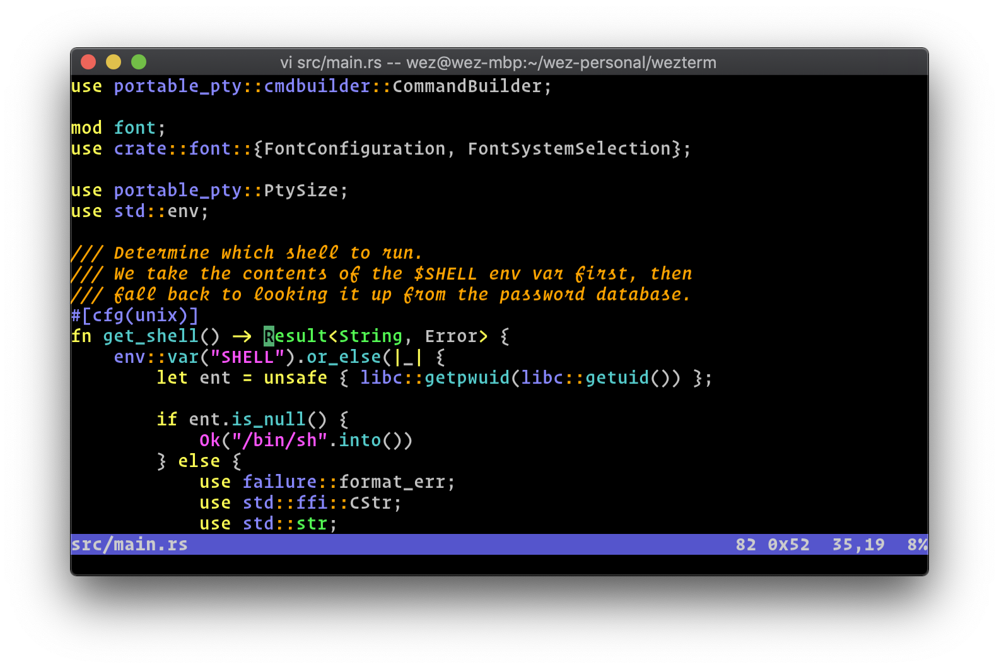

WezTerm is a GPU-accelerated cross-platform terminal emulator and multiplexer written by @wez and implemented in Rust
Features
- Runs on Linux, macOS and Windows 10
- Multiplex terminal tabs and windows on local and remote hosts, with native mouse and scrollback
- Ligatures, Color Emoji and font fallback, with true color and dynamic color schemes.
- Hyperlinks
- a full list of features can be found here
Looking for a configuration reference?
Screenshot of wezterm on macOS, running vim
Installing on Windows
Windows 10 or later is required to run WezTerm.
Download for Windows Nightly for Windows
- Download Release
- Extract the zipfile and double-click
wezterm.exeto run the UI - Configuration instructions can be found here
Installing on macOS
The CI system builds the package on macOS Mojave (10.14). It may run on earlier versions of macOS, but that has not been tested.
Download for macOS Nightly for macOS
- Download Release
- Extract the zipfile and drag the
WezTerm.appbundle to yourApplicationsfolder - First time around, you may need to right click and select
Opento allow launching the application that your just downloaded from the internet. - Subsequently, a simple double-click will launch the UI
- Configuration instructions can be found here
Installing on Ubuntu
The CI system builds a .deb file on Ubuntu 16.04. It is compatible with other
debian style systems, including Debian 9 (Stretch) and later versions.
Download for Ubuntu Nightly for Ubuntu
curl -LO https://github.com/wez/wezterm/releases/download/20200202-200216-b07ed454/wezterm-20200202-200216-b07ed454.deb
sudo apt install -y ./wezterm-20200202-200216-b07ed454.deb
- The package installs
/usr/bin/weztermand/usr/share/applications/wezterm.desktop - Configuration instructions can be found here
Installing on Fedora
The CI system builds an .rpm file on Fedora 31.
Download for Fedora Nightly for Fedora
sudo dnf install -y https://github.com/wez/wezterm/releases/download/20200202-200216-b07ed454/wezterm-20200202_200216_b07ed454-1.fc31.x86_64.rpm
- The package installs
/usr/bin/weztermand/usr/share/applications/wezterm.desktop - Configuration instructions can be found here
Installing on CentOS
The CI system builds an .rpm file on CentOS 7.
sudo dnf install -y https://github.com/wez/wezterm/releases/download/nightly/wezterm-nightly-centos7.rpm
- The package installs
/usr/bin/weztermand/usr/share/applications/wezterm.desktop - Configuration instructions can be found here
Installing on Linux via AppImage
If you have some other Linux system, or otherwise prefer AppImage over your system package format, you can download a build by following these steps.
curl -LO https://github.com/wez/wezterm/releases/download/20200202-200216-b07ed454/WezTerm-b07ed45-x86_64.AppImage
chmod +x WezTerm-b07ed45-x86_64.AppImage
You may then execute the appimage directly to launch wezterm.
- Configuration instructions can be found here
Raw Linux Binary
Another option for linux is a raw binary archive. These are the same binaries that are built for Ubuntu but provided in a tarball.
Download raw Linux binaries Nightly raw Linux binaries
Installing from source
If your system isn't covered by the list above, then you can build it for yourself. WezTerm should run on any modern unix as well as Windows 10 and macOS.
- Install
rustupto get therustcompiler installed on your system. Install rustup - Rust version 1.39 or later is required
- Build in release mode:
cargo build --release - Run it via either
cargo run --releaseortarget/release/wezterm
You will need a collection of support libraries; the get-deps script will
attempt to install them for you. If it doesn't know about your system,
please contribute instructions!
If you don't plan to submit a pull request to the wezterm repo, you can download a smaller source tarball using these steps:
curl https://sh.rustup.rs -sSf | sh -s
curl -LO https://github.com/wez/wezterm/releases/download/20200202-200216-b07ed454/wezterm-20200202-200216-b07ed454-src.tar.gz
tar -xzf wezterm-20200202-200216-b07ed454-src.tar.gz
cd wezterm-20200202-200216-b07ed454
sudo ./get-deps
cargo build --release
cargo run --release -- start
Alternatively, use the full git repo:
curl https://sh.rustup.rs -sSf | sh -s
git clone --depth=1 --branch=master --recursive https://github.com/wez/wezterm.git
cd wezterm
git submodule update --init --recursive
sudo ./get-deps
cargo build --release
cargo run --release -- start
Available Features
- Runs on Linux, macOS and Windows 10
- Multiplex terminal tabs and windows on local and remote hosts, with native mouse and scrollback
- Ligatures, Color Emoji and font fallback, with true color and dynamic color schemes.
- Hyperlinks
- Scrollback (use mouse wheel and
Shift-PageUpandShift PageDown) - xterm style selection of text with mouse; paste selection via
Shift-Insert(bracketed paste is supported!) - SGR style mouse reporting (works in vim and tmux)
- Render underline, double-underline, italic, bold, strikethrough (most other terminal emulators do not support as many render attributes)
- Configuration via a configuration file with hot reloading
- Multiple Windows (Hotkey:
Super-N) - Tabs (Hotkey:
Super-T, next/prev:Super-[andSuper-], go-to:Super-[1-9]) - SSH client with native tabs
- Connect to serial ports for embedded/Arduino work
- Connect to a local multiplexer server over unix domain sockets
- Connect to a remote multiplexer using SSH or TLS over TCP/IP
- iTerm2 compatible image protocol support, and built-in imgcat command
Features for the Future
- Sixel graphics support
Changes
Releases are named using the date, time and git commit hash.
Nightly
A bleeding edge build is produced continually (at least daily) from the master branch. It may not be usable and the feature set may change. As features stabilize some brief notes about them may accumulate here.
- Added
initial_rowsandinitial_colsconfig options to set the starting size of new terminal windows - Added
hide_tab_bar_if_only_one_tab = trueconfig option to hide the tab bar when the window contains only a single tab. - Added
HideApplicationkey action (defaults toCMD-Hon macOS only) which hides the wezterm application. This is macOS specific. - Added
QuitApplicationkey action which causes the gui loop to terminate and the application to exit. This is not bound by default, but you may choose to assign it to something likeCMD-Q. - Added
set_environment_variablesconfiguration section to allow defining some environment variables to be passed to your shell. - Added lua based configuration. Reading TOML configuration will be rapidly phased out in favor of the more flexible lua config; for now, both are supported, but new features may not be available via TOML.
- Added launcher overlay. Right click the
+button on the tab bar or bind a key toShowLauncherto activate it. It allows spawning tabs in various domains as well as attaching multiplexer sessions that were not connected automatically at startup.
20200202-181957-765184e5
- Improved font shaping performance 2-3x by adding a shaper cache
- Windows: now has support for TLS based multiplexer connections
- Multiplexer: TLS multiplexer can now be bootstrapped via SSH, and automatically manages certificates
- Unix: We now default to spawning shells with the
-largument to request a login shell. This is important on macOS where the default GUI environment doesn't source a working PATH from the shell, resulting in an anemic PATH unless the user has taken care to cover this in their shell startup.-lworks to enable a login shell inzsh,bash,fishandtcsh. If it doesn't work with your shell, you can use thedefault_progconfiguration option to override this. - We now accept
rgb:XX/XX/XXcolor syntax for OSC 4 and related escape sequences; previously only#XXXXXXand named colors were accepted. - We now accept OSC 104 to reset custom colors to their defaults.
- Added Tab Navigator overlay for folks that hoard tabs; it presents
an interactive UI for selecting and activating a tab from a vertically
oriented list. This is bound to
Alt-9by default. - Added support for DEC Origin Mode (
DECOM) which improves cursor positioning with some applications - Added support for DEC AutoWrap Mode (
DECAWM) which was previously always on. This improves rendering for applications that explicitly disable it. - We now show a connection status window while establishing MUX and SSH connections. The status window is also where any interactive authentication is carried out for eg: SSH sessions.
- Improved SSH authentication handling; we now give you a few opportunities to authenticate and are now able to successfully authenticate with sites that have configured 2-Factor authentication in their server side SSH configuration.
- Fixed an issue where SHIFT-Space would swallow the space key.
- Nightly builds are now available for Linux in AppImage format.
- Shift+Left Mouse button can now be used to extend the selection to the clicked location. This is particularly helpful when you want to select something that is larger than the viewport.
- Windows: a single mouse wheel tick now scrolls by the number of positions configured in the Windows system settings (default 3)
- Windows: fixed IME position when the tab bar is enabled
- Windows: removed support for WinPty, which was too difficult to obtain, configure and use.
- Configuration errors now show in a separate window on startup, or when the configuration is reloaded
- Improved reliability and performance of MUX sessions, although they still have room for further improvement
20200113-214446-bb6251f
- Added
color_schemeconfiguration option and more than 200 color schemes - Improved resize behavior; lines that were split due to the width of the terminal are now rewrapped on resize. Issue 14
- Double-click and triple-click and hold followed by a drag now extends the selection by word and line respectively.
- The OSC 7 (CurrentWorkingDirectory) escape sequence is now supported; wezterm records the cwd in a tab and that will be used to set the working directory when spawning new tabs in the same domain. You will need to configure your shell to emit OSC 7 when appropriate.
- Changed Backspace/Delete handling
- Added
MoveTabRelativefor changing the ordering of tabs within a window using key assignmentsCTRL+SHIFT+PageUpandCTRL+SHIFT+PageDown - The multiplexer protocol is undergoing major changes. The multiplexer will now raise an error if the client and server are incompatible.
- Fixed an issue where wezterm would linger for a few seconds after the last tab was closed
- Fixed an issue where wezterm wouldn't repaint the screen after a tab was closed
- Clicking the OS window close button in the titlebar now closes the window rather than the active tab
- Added
use_imeoption to optionally disable the use of the IME on macOS. You might consider enabling this if you don't like the way that the IME swallows key repeats for some keys. - Fix an issue where the pidfile would leak into child processes and block restarting the mux server
- Fix an issue where the title bars of remote tabs were not picked up at domain attach time
- Fixed selection and scrollbar position for multiplexer tabs
- Added
ScrollByPagekey assignment and moved theSHIFT+PageUphandling up to the gui layer so that it can be rebound. - X11: a single mouse wheel tick now scrolls by 5 rows rather than 1
- Wayland: normalize line endings to unix line endings when pasting
- Windows: fixed handling of focus related messages, which impacted both the appearance of the text cursor and copy and paste handling.
- When hovering over implicitly hyperlinked items, we no longer show the underline for every other URL with the same destination
20191229-193639-e7aa2f3
- Fixed a hang when using middle mouse button to paste
- Recognize 8-bit C1 codes encoded as UTF-8, which are used in the Fedora 31 bash prexec notification for gnome terminal
- Ensure that underlines are a minimum of 1 pixel tall
- Reduced CPU utilization on some Wayland compositors
- Added
$WEZTERM_CONFIG_FILEto the start of the config file search path - Added new font rendering options:
font_antialias = "Subpixel" # None, Greyscale, Subpixel
font_hinting = "Full" # None, Vertical, VerticalSubpixel, Full
- Early startup errors now generate a "toast" notification, giving you more of a clue about what went wrong
- We now use the default configuration if the config file had errors, rather than refusing to start
- Wayland compositors: Improved detection of display scaling on startup
- Added
harfuzz_featuresoption to specify stylistic sets for fonts such as Fira Code, and to control various typographical options - Added a
window_paddingconfig section to add padding to the window display - We now respect DECSCUSR and DECTCEM escape sequence to select between hidden, block, underline and bar cursor types, as well as blinking cursors. New configuration options have been added to control the appearance and blink rate.
- We now support an optional basic scroll bar. The scroll bar occupies the right window padding and has a configurable color. Scroll bars are not yet supported for multiplexer connections and remain disabled by default for the moment.
- Color scheme changes made in the config file now take effect at config reload time for all tabs that have not applied a dynamic color scheme.
20191218-101156-bf35707
- Configuration errors detected during config loading are now shown as a system notification
- New
font_dirsconfiguration option to specify a set of dirs to search for fonts. Useful for self-contained wezterm deployments. - The
font_systemoption has been split intofont_locator,font_shaperandfont_rasterizeroptions. - Don't allow child processes to inherit open font files on posix systems!
- Disable Nagle's algorithm for
wezterm sshsessions - Add native Wayland window system support
20191124-233250-cb9fd7d
- New tab bar UI displays tabs and allows creating new tabs
- Configuration file changes are hot reloaded and take effect automatically on save
wezterm ssh user@hostfor ad-hoc SSH sessions. You may also define SSH multiplexer sessions.wezterm serial /dev/ttyUSB0to connect to your Arduinowezterm imgcat /some/image.pngto display images inline in the terminal using the iTerm2 image protocol- IME support on macOS and Windows systems
- Automatic fallback to software rendering if no GPU is available (eg: certain types of remote desktop sessions)
Configuration Files
wezterm will look for a TOML configuration file in the following locations,
stopping at the first file that it finds:
- If the environment variable
$WEZTERM_CONFIG_FILEis set, it will be treated as the path to a configuration file. - On Windows,
wezterm.tomlfrom the directory that containswezterm.exe. This is handy for users that want to carry their wezterm install around on a thumb drive. $HOME/.config/wezterm/wezterm.toml,$HOME/.wezterm.toml
wezterm will watch the config file that it loads;
if/when it changes, the configuration will be
automatically reloaded and the majority of options
will take effect immediately. You may also use the
CTRL+SHIFT+R keyboard shortcut to force the configuration to be reloaded.
Configuration is currently very simple and the format is considered unstable and subject
to change. The code for configuration can be found in src/config/mod.rs.
Font Related Configuration
By default, wezterm will use an appropriate system-specific method for
locating the fonts that you specify using the options below. In addition,
if you configure the font_dirs option, wezterm will load fonts from that
set of directories:
# This tells wezterm to look first for fonts in the directory named
# `fonts` that is found alongside your `wezterm.toml` file.
# As this option is an array, you may list multiple locations if
# you wish.
font_dirs = ["fonts"]
The following options impact how text is rendered:
# The font size, measured in points
font_size = 11
# The DPI to assume, measured in dots-per-inch
# This is not automatically probed! If you experience blurry text
# or notice slight differences when comparing with other terminal
# emulators, you may wish to tune this value!
dpi = 96
The baseline font is configured via the [[font.font]] section:
[[font.font]]
# The font family name. The default is "Menlo" on macOS,
# "Consolas" on Windows and "monospace" on X11 based systems.
# "Fira Code" to enjoy ligatures without buying an expensive font!
family = "Operator Mono SSm Lig Medium"
# Whether the font should be a bold variant
# bold = false
# Whether the font should be an italic variant
# italic = false
If you'd like to specify fallback fonts (eg: you've got a killer monospace font, but it doesn't have glyphs for the asian script that you sometimes work with), you can specify multiple fonts that wezterm will use in the order you specify:
[[font.font]]
family = "My Preferred Font"
# This is searched for glyphs that aren't found in the first one
[[font.font]]
family = "My second best font"
# This is searched for glyphs that aren't found in either of
# the first two
[[font.font]]
family = "My third best font"
You may specify rules that apply different font styling based on the attributes of the text rendered in the terminal. Rules are applied in the order that they are specified in the configuration file, stopping with the first matching rule.
# Define a rule that matches when italic text is shown
[[font_rules]]
# If specified, this rule matches when a cell's italic value exactly
# matches this. If unspecified, the attribute value is irrelevant
# with respect to matching.
italic = true
# Match based on intensity: "Bold", "Normal" and "Half" are supported
# intensity = "Normal"
# Match based on underline: "None", "Single", and "Double" are supported
# underline = "None"
# Match based on the blink attribute: "None", "Slow", "Rapid"
# blink = "None"
# Match based on reverse video
# reverse = false
# Match based on strikethrough
# strikethrough = false
# Match based on the invisible attribute
# invisible = false
# When the above attributes match, apply this font styling
[font_rules.font]
font = [{family = "Operator Mono SSm Lig Medium", italic=true}]
Here's an example from my configuration file:
# Select a fancy italic font for italic text
[[font_rules]]
italic = true
[font_rules.font]
font = [{family = "Operator Mono SSm Lig Medium", italic=true}]
# Similarly, a fancy bold+italic font
[[font_rules]]
italic = true
intensity = "Bold"
[font_rules.font]
font = [{family = "Operator Mono SSm Lig", italic=true, bold=true}]
# Make regular bold text a different color to make it stand out even more
[[font_rules]]
intensity = "Bold"
[font_rules.font]
font = [{family = "Operator Mono SSm", bold=true}]
foreground="tomato"
# For half-intensity text, use a lighter weight font
[[font_rules]]
intensity = "Half"
[font_rules.font]
font=[{family = "Operator Mono SSm Lig Light" }]
There are a couple of additional advanced font configuration options:
font_locator- specifies the method by which system fonts are located and loaded. You may specifyConfigDirsOnlyto disable loading system fonts and use only the fonts found in the directories that you specify in yourfont_dirsconfiguration option. Otherwise, it is recommended to omit this setting.font_shaper- specifies the method by which text is mapped to glyphs in the available fonts. The shaper is responsible for handling kerning, ligatures and emoji composition. The default isHarfbuzzand we have very preliminary support forAllsorts.font_rasterizer- specifies the method by which fonts are rendered on screen. The only available implementation isFreeType.
These options affect the appearance of the text. Subpixel antialiasing
is approximatley equivalent to ClearType rendering on Windows, but some
people find that it appears blurry. You may wish to try Greyscale in
that case.
font_antialias = "Subpixel" # None, Greyscale, Subpixel
font_hinting = "Full" # None, Vertical, VerticalSubpixel, Full
Advanced Font Shaping Options
The harfbuzz_features option allows specifying the features to enable when
using harfbuzz for font shaping.
There is some light documentation here: https://harfbuzz.github.io/shaping-opentype-features.html but it boils down to allowing opentype feature names to be specified using syntax similar to the CSS font-feature-settings options: https://developer.mozilla.org/en-US/docs/Web/CSS/font-feature-settings. The OpenType spec lists a number of features here: https://docs.microsoft.com/en-us/typography/opentype/spec/featurelist
Options of likely interest will be:
calt- https://docs.microsoft.com/en-us/typography/opentype/spec/features_ae#tag-caltclig- https://docs.microsoft.com/en-us/typography/opentype/spec/features_ae#tag-clig
If you want to disable ligatures in most fonts, then you may want to use a setting like this:
harfbuzz_features = ["calt=0", "clig=0", "liga=0"]
Some fonts make available extended options via stylistic sets. If you use the Fira Code font, it lists available stylistic sets here: https://github.com/tonsky/FiraCode/wiki/How-to-enable-stylistic-sets
and you can set them in wezterm:
# Use this for a zero with a dot rather than a line through it
# when using the Fira Code font
harfbuzz_features = ["zero"]
Misc configuration
# How many lines of scrollback you want to retain per tab
scrollback_lines = 3500
# Enable the scrollbar. This is currently disabled by default.
# It will occupy the right window padding space.
# If right padding is set to 0 then it will be increased
# to a single cell width
enable_scroll_bar = true
# If no `prog` is specified on the command line, use this
# instead of running the user's shell.
# The value is the argument array, with the 0th element being
# the executable to run. The path will be searched to locate
# this if needed.
# For example, to have `wezterm` always run `top` by default,
# you'd use this:
default_prog = ["top"]
# What to set the TERM variable to
term = "xterm-256color"
# Constrains the rate at which output from a child command is
# processed and applied to the terminal model.
# This acts as a brake in the case of a command spewing a
# ton of output and allows for the UI to remain responsive
# so that you can hit CTRL-C to interrupt it if desired.
# The default value is 200,000 bytes/s.
ratelimit_output_bytes_per_second = 200_000
# Constrains the rate at which the multiplexer server will
# unilaterally push data to the client.
# This helps to avoid saturating the link between the client
# and server.
# Each time the screen is updated as a result of the child
# command outputting data (rather than in response to input
# from the client), the server considers whether to push
# the result to the client.
# That decision is throttled by this configuration value
# which has a default value of 10/s
ratelimit_mux_output_pushes_per_second = 10
# Constrain how often the mux server scans the terminal
# model to compute a diff to send to the mux client.
# The default value is 100/s
ratelimit_mux_output_scans_per_second = 100
# If false, do not try to use a Wayland protocol connection
# when starting the gui frontend, and instead use X11.
# This option is only considered on X11/Wayland systems and
# has no effect on macOS or Windows.
# The default is true.
enable_wayland = true
# Specifies how often a blinking cursor transitions between visible
# and invisible, expressed in milliseconds.
# Setting this to 0 disables blinking.
# Note that this value is approximate due to the way that the system
# event loop schedulers manage timers; non-zero values will be at
# least the interval specified with some degree of slop.
# It is recommended to avoid blinking cursors when on battery power,
# as it is relatively costly to keep re-rendering for the blink!
cursor_blink_rate = 800
# Specifies the default cursor style. various escape sequences
# can override the default style in different situations (eg:
# an editor can change it depending on the mode), but this value
# controls how the cursor appears when it is reset to default.
# The default is `SteadyBlock`.
# Acceptable values are `SteadyBlock`, `BlinkingBlock`,
# `SteadyUnderline`, `BlinkingUnderline`, `SteadyBar`,
# and `BlinkingBar`.
default_cursor_style = "SteadyBlock"
Shortcut / Key Binding Assignments
The default key bindings are:
| Modifiers | Key | Action |
|---|---|---|
SUPER | c | Copy |
SUPER | v | Paste |
CTRL+SHIFT | c | Copy |
CTRL+SHIFT | v | Paste |
SHIFT | Insert | Paste |
SUPER | m | Hide |
SUPER | n | SpawnWindow |
CTRL+SHIFT | n | SpawnWindow |
ALT | Enter | ToggleFullScreen |
SUPER | - | DecreaseFontSize |
CTRL | - | DecreaseFontSize |
SUPER | = | IncreaseFontSize |
CTRL | = | IncreaseFontSize |
SUPER | 0 | ResetFontSize |
CTRL | 0 | ResetFontSize |
SUPER | t | SpawnTabInCurrentTabDomain |
CTRL+SHIFT | t | SpawnTabInCurrentTabDomain |
SUPER+SHIFT | T | SpawnTab |
SUPER | w | CloseCurrentTab |
SUPER | 1 | ActivateTab(0) |
SUPER | 2 | ActivateTab(1) |
SUPER | 3 | ActivateTab(2) |
SUPER | 4 | ActivateTab(3) |
SUPER | 5 | ActivateTab(4) |
SUPER | 6 | ActivateTab(5) |
SUPER | 7 | ActivateTab(6) |
SUPER | 8 | ActivateTab(7) |
SUPER | 9 | ActivateTab(8) |
CTRL+SHIFT | w | CloseCurrentTab |
CTRL+SHIFT | 1 | ActivateTab(0) |
CTRL+SHIFT | 2 | ActivateTab(1) |
CTRL+SHIFT | 3 | ActivateTab(2) |
CTRL+SHIFT | 4 | ActivateTab(3) |
CTRL+SHIFT | 5 | ActivateTab(4) |
CTRL+SHIFT | 6 | ActivateTab(5) |
CTRL+SHIFT | 7 | ActivateTab(6) |
CTRL+SHIFT | 8 | ActivateTab(7) |
CTRL+SHIFT | 9 | ActivateTab(8) |
SUPER+SHIFT | [ | ActivateTabRelative(-1) |
SUPER+SHIFT | ] | ActivateTabRelative(1) |
CTRL+SHIFT | PAGEUP | MoveTabRelative(-1) |
CTRL+SHIFT | PAGEDOWN | MoveTabRelative(1) |
SHIFT | PAGEUP | ScrollByPage(-1) |
SHIFT | PAGEDOWN | ScrollByPage(1) |
These can be overridden using the keys section in your ~/.wezterm.toml config file.
For example, you can disable a default assignment like this:
# Turn off the default CMD-m Hide action
[[keys]]
key = "m"
mods = "CMD"
action = "Nop"
The key value can be one of the following keycode identifiers. Note that not
all of these are meaningful on all platforms:
Hyper, Super, Meta, Cancel, Backspace, Tab, Clear, Enter,
Shift, Escape, LeftShift, RightShift, Control, LeftControl,
RightControl, Alt, LeftAlt, RightAlt, Menu, LeftMenu, RightMenu,
Pause, CapsLock, PageUp, PageDown, End, Home, LeftArrow,
RightArrow, UpArrow, DownArrow, Select, Print, Execute,
PrintScreen, Insert, Delete, Help, LeftWindows, RightWindows,
Applications, Sleep, Numpad0, Numpad1, Numpad2, Numpad3,
Numpad4, Numpad5, Numpad6, Numpad7, Numpad8, Numpad9, Multiply,
Add, Separator, Subtract, Decimal, Divide, NumLock, ScrollLock,
BrowserBack, BrowserForward, BrowserRefresh, BrowserStop,
BrowserSearch, BrowserFavorites, BrowserHome, VolumeMute,
VolumeDown, VolumeUp, MediaNextTrack, MediaPrevTrack, MediaStop,
MediaPlayPause, ApplicationLeftArrow, ApplicationRightArrow,
ApplicationUpArrow, ApplicationDownArrow.
Alternatively, a single unicode character can be specified to indicate pressing the corresponding key.
Possible Modifier labels are:
SUPER,CMD,WIN- these are all equivalent: on macOS theCommandkey, on Windows theWindowskey, on Linux this can also be theSuperorHyperkey. Left and right are equivalent.SHIFT- The shift key. Left and right are equivalent.ALT,OPT,META- these are all equivalent: on macOS theOptionkey, on other systems theAltorMetakey. Left and right are equivalent.
You can combine modifiers using the | symbol (eg: "CMD|CTRL").
Possible actions are listed below. Some actions require a parameter that is
specified via the arg key; see examples below.
| Name | Effect |
|---|---|
SpawnTab | Create a new local tab in the current window |
SpawnTabInCurrentTabDomain | Create a new tab in the current window. The tab will be spawned in the same domain as the currently active tab |
SpawnTabInDomain | Create a new tab in the current window. The tab will be spawned in the domain specified by the arg value |
SpawnWindow | Create a new window |
ToggleFullScreen | Toggles full screen mode for current window |
Paste | Paste the clipboard to the current tab |
ActivateTabRelative | Activate a tab relative to the current tab. The arg value specifies an offset. eg: -1 activates the tab to the left of the current tab, while 1 activates the tab to the right. |
ActivateTab | Activate the tab specified by the arg value. eg: 0 activates the leftmost tab, while 1 activates the second tab from the left, and so on. |
IncreaseFontSize | Increases the font size of the current window by 10% |
DecreaseFontSize | Decreases the font size of the current window by 10% |
ResetFontSize | Reset the font size for the current window to the value in your configuration |
SendString | Sends the string specified by the arg value to the terminal in the current tab, as though that text were literally typed into the terminal. |
Nop | Does nothing. This is useful to disable a default key assignment. |
Hide | Hides the current window |
Show | Shows the current window |
CloseCurrentTab | Equivalent to clicking the x on the window title bar to close it: Closes the current tab. If that was the last tab, closes that window. If that was the last window, wezterm terminates. |
MoveTabRelative | Move the current tab relative to its peers. The arg value specifies an offset. eg: -1 moves the tab to the left of the current tab, while 1 moves the tab to the right. |
MoveTab | Move the tab so that it has the index specified by the arg value. eg: 0 moves the tab to be leftmost, while 1 moves the tab so that it is second tab from the left, and so on. |
ScrollByPage | Adjusts the scroll position by the number of pages specified by the arg value. Negative values scroll upwards, while positive values scroll downwards. |
Example:
# Turn off the default CMD-m Hide action
[[keys]]
key = "m"
mods = "CMD"
action = "Nop"
# Macro for sending in some boiler plate. This types `wtf!?` each
# time CMD+SHIFT+W is pressed
[[keys]]
key = "W"
mods = "CMD|SHIFT"
action = "SendString"
arg = "wtf!?"
# CTRL+ALT+0 activates the leftmost tab
[[keys]]
key = "0"
mods = "CTRL|ALT"
action = "ActivateTab"
# the tab number
arg = "0"
# CMD+y spawns a new tab in Domain 1
[[keys]]
key = "y"
mods = "CMD"
action = "SpawnTabInDomain"
# the domain ID
arg = "1"
Color Scheme
Wezterm ships with the full set of over 200 color schemes available from iterm2colorschemes.com. You can select a color scheme with a line like this:
color_scheme = "Batman"
There are literally too many schemes to reasonably list here; check out the screenshots on iterm2colorschemes.com!
The color_scheme option takes precedence over the colors section below.
Defining your own colors
Rather than using a color scheme, you can specify the color palette using the
[colors] configuration section. Note that color_scheme takes precedence
over this section.
You can configure colors with a section like this. In addition to specifying
SVG/CSS3 color names,
you can use #RRGGBB to specify a color code using the
usual hex notation; eg: #000000 is equivalent to black:
[colors]
# The default text color
foreground = "silver"
# The default background color
background = "black"
# Overrides the cell background color when the current cell is occupied by the
# cursor and the cursor style is set to Block
cursor_bg = "#52ad70"
# Overrides the text color when the current cell is occupied by the cursor
cursor_fg = "black"
# Specifies the border color of the cursor when the cursor style is set to Block,
# of the color of the vertical or horizontal bar when the cursor style is set to
# Bar or Underline.
cursor_border = "#52ad70"
# The color of the scrollbar "thumb"; the portion that represents the current viewport
scrollbar_thumb = "#222222"
ansi = ["black", "maroon", "green", "olive", "navy", "purple", "teal", "silver"]
brights = ["grey", "red", "lime", "yellow", "blue", "fuchsia", "aqua", "white"]
Defining a Color Scheme in your wezterm.toml
If you'd like to keep a couple of color schemes handy in your configuration
file, rather than filling out the [colors] section, place it in a
color_schemes section as shown below; you can then reference it using the
color_scheme setting.
Color schemes names that you define in your wezterm.toml take precedence
over all other color schemes.
All of the settings available from the [colors] section are available
to use in the color_schemes sections.
color_scheme = "Red Scheme"
[color_schemes."Red Scheme"]
background = "red"
[color_schemes."Blue Scheme"]
background = "blue"
Defining a Color Scheme in a separate file
If you'd like to factor your color schemes out into separate files, you
can create a file with a [colors] section; take a look at one of
the available color schemes for an example.
You then need to instruct wezterm where to look for your scheme files;
the color_scheme_dirs setting specifies a list of directories to
be searched:
color_scheme_dirs = ["/some/path/to/my/color/schemes"]
Color scheme names that are defined in files in your color_scheme_dirs list
take precedence over the built-in color schemes.
Dynamic Color Escape Sequences
Wezterm supports dynamically changing its color palette via escape sequences.
The dynamic-colors directory of the color scheme repo contains shell scripts that can change the color scheme immediately on the fly. This can be used in your own scripts to alter the terminal appearance programmatically:
$ git clone https://github.com/mbadolato/iTerm2-Color-Schemes.git
$ cd iTerm2-Color-Schemes/dynamic-colors
$ for scheme in *.sh ; do ; echo $scheme ; \
bash "$scheme" ; ../tools/screenshotTable.sh; sleep 0.5; done
Tab Bar Colors
The following options control the appearance of the tab bar:
[colors.tab_bar]
# The color of the strip that goes along the top of the window
background = "#0b0022"
# The active tab is the one that has focus in the window
[colors.tab_bar.active_tab]
# The color of the background area for the tab
bg_color = "#2b2042"
# The color of the text for the tab
fg_color = "#c0c0c0"
# Specify whether you want "Half", "Normal" or "Bold" intensity for the
# label shown for this tab.
# The default is "Normal"
intensity = "Normal"
# Specify whether you want "None", "Single" or "Double" underline for
# label shown for this tab.
# The default is "None"
underline = "None"
# Specify whether you want the text to be italic (true) or not (false)
# for this tab. The default is false.
italic = false
# Specify whether you want the text to be rendered with strikethrough (true)
# or not for this tab. The default is false.
strikethrough = false
# Inactive tabs are the tabs that do not have focus
[colors.tab_bar.inactive_tab]
bg_color = "#1b1032"
fg_color = "#808080"
# The same options that were listed under the `active_tab` section above
# can also be used for `inactive_tab`.
# You can configure some alternate styling when the mouse pointer
# moves over inactive tabs
[colors.tab_bar.inactive_tab_hover]
bg_color = "#3b3052"
fg_color = "#909090"
italic = true
# The same options that were listed under the `active_tab` section above
# can also be used for `inactive_tab_hover`.
Window Padding
You may add padding around the edges of the terminal cells:
[window_padding]
left = 2
# This will become the scrollbar width if you have enabled the scrollbar!
right = 2
top = 0
bottom = 0
Hyperlinks
wezterm has support for both implicit and explicit hyperlinks.
Implicit Hyperlinks
Implicit hyperlinks are produced by running a series of rules over the output
displayed in the terminal to produce a hyperlink. There is a default rule
to match URLs and make them clickable, but you can also specify your own rules
to make your own links. As an example, at my place of work many of our internal
tools use T123 to indicate task number 123 in our internal task tracking system.
It is desirable to make this clickable, and that can be done with the following
configuration:
# Linkify things that look like URLs
# This is actually the default if you don't specify any hyperlink_rules
[[hyperlink_rules]]
regex = "\\b\\w+://(?:[\\w.-]+)\\.[a-z]{2,15}\\S*\\b"
format = "$0"
# Un-comment this if you want to linkify email addresses
#[[hyperlink_rules]]
#regex = "\\b\\w+@[\\w-]+(\\.[\\w-]+)+\\b"
#format = "mailto:$0"
# Make task numbers clickable
[[hyperlink_rules]]
regex = "\\b[tT](\\d+)\\b"
format = "https://example.com/tasks/?t=$1"
Explicit Hyperlinks
wezterm supports the relatively new Hyperlinks in Terminal Emulators specification that allows emitting text that can be clicked and resolve to a specific URL, without the URL being part of the display text. This allows for a cleaner presentation.
The gist of it is that running the following bash one-liner:
printf '\e]8;;http://example.com\e\\This is a link\e]8;;\e\\\n'
will output the text This is a link that when clicked will open
http://example.com in your browser.
Shell Integration
wezterm supports integrating with the shell through the following means:
OSC 7 Escape sequence to set the working directory
OSC is escape sequence jargon for Operating System Command; OSC 7 means
Operating System Command number 7. This is an escape sequence that originated
in the macOS Terminal application that is used to advise the terminal of the
current working directory.
An application (usually your shell) can be configured to emit this escape sequence when the current directory changes, or just to emit it each time it prints the prompt.
The current working directory can be specified as a URL like this:
printf "\033]7;file://HOSTNAME/CURRENT/DIR\033\\"
When the current working directory has been set via OSC 7, spawning a new tab will use the current working directory of the current tab, so that you don't have to manually change the directory.
If you are on a modern Fedora installation, the defaults for bash and
zsh source a vte.sh script that configures the shell to emit this
sequence. On other systems you will likely need to configure this
for yourself.
OSC 7 on Windows with cmd.exe
cmd.exe doesn't allow a lot of flexibility in configuring the prompt,
but fortunately it does allow for emitting escape sequences. You
can use the set_environment_variables configuration to pre-configure
the prompt environment in your wezterm.toml; this example configures
the use of OSC 7 as well as including the time and current directory in
the visible prompt with green and purple colors, and makes the prompt
span multiple lines:
[set_environment_variables]
prompt = "$E]7;file://localhost/$P$E\\$E[32m$T$E[0m $E[35m$P$E[36m$_$G$E[0m "
Using clink on Windows Systems
Clink brings bash style line editing to
your Windows cmd.exe experience. If you haven't installed clink to be the
global default on your system, you can configure wezterm to launch clink by
setting the default_prog configuration in your wezterm.toml; for example,
if you have extracted clink to c:\clink_0.4.9 you might configure this:
default_prog = ["cmd.exe", "/s", "/k", "c:/clink_0.4.9/clink_x64.exe", "inject", "-q"]
Now, rather than just running cmd.exe on its own, this will cause cmd.exe
to self-inject the clink line editor.
iTerm Image Protocol Support
wezterm implements support for the iTerm2 inline images
protocol and provides a handy
imgcat subcommand to make it easy to try out. Because the protocol is
just a protocol, wezterm's imgcat also renders images in iTerm2.
To render an image inline in your terminal:
$ wezterm imgcat /path/to/image.png
Note that the image protocol isn't fully handled by multiplexer sessions at this time.
SSH Connections
wezterm uses libssh2 to provide an integrated SSH client. The client can be used to make ad-hoc SSH connections to remote hosts by invoking the client:
$ wezterm ssh wez@my.server
(checkout wezterm ssh -h for more options).
When invoked in this way, wezterm may prompt you for SSH authentication and once a connection is established, open a new terminal window with your requested command, or your shell if you didn't specify one.
Creating a new tab will create a new channel in your existing session so you won't need to re-authenticate for additional tabs that you create.
SSH sessions created in this way are non-persistent and all associated tabs will die if your network connection is interrupted.
Take a look at the multiplexing section for an alternative configuration that connects to a remote wezterm instance and preserves your tabs.
Serial Ports
wezterm can also connect to serial ports as a client. This is useful for example when working with embedded devices such as Arduino, or when connecting to a serial console on a headless server.
For example, on Linux:
$ wezterm serial /dev/ttyUSB0
or on Windows:
$ wezterm serial COM0
You can also specify the baud rate:
$ wezterm serial --baud 38400 /dev/ttyUSB0
When a wezterm window is operating in serial mode it is not possible to create new tabs.
Notice: multiplexing is still a young feature and is evolving rapidly. Your feedback is welcomed!
Multiplexing
The out-of-the-box experience with wezterm allows you to multiplex local tabs
and windows which will persist until they are closed. With a little extra
configuration you can enable local terminal multiplexing with features similar
to those in tmux or screen.
Multiplexing in wezterm is based around the concept of multiplexing domains;
a domain is a distinct set of windows and tabs. When wezterm starts up it
creates a default local domain to manage the windows and tabs in the UI, but it
can also be configured to start or connect to any number of additional domains.
Once connected to a domain, wezterm can attach its windows and tabs to the
local native UI, providing a more natural experience for interacting with
the mouse, clipboard and scrollback features of the terminal.
Key bindings allow you to spawn new tabs in the default local domain, the domain of the current tab, or a specific numbered domain.
SSH Domains
wezterm also supports regular ad-hoc ssh connections. This section of the docs refers to running a wezterm daemon on the remote end of a multiplexing session that uses ssh as a channel
A connection to a remote wezterm multiplexer made via an ssh connection is referred to as an SSH domain. A compatible version of wezterm must be installed on the remote system in order to use SSH domains. SSH domains are supported on all systems via libssh2.
To configure an SSH domain, place something like the following in
your wezterm.toml file:
[[ssh_domains]]
# This name identifies the domain
name = "my.server"
# The address to connect to
remote_address = "192.168.1.1"
# The username to use on the remote host
username = "wez"
To connect to the system, run:
$ wezterm connect my.server
This will launch an SSH session that connects to the specified address and may pop up authentication dialogs (using SSH keys for auth is strongly recommended!). Once connected, it will attempt to spawn the wezterm multiplexer daemon on the remote host and connect to it via a unix domain socket using a similar mechanism to that described in the Unix Domains section below.
Unix Domains
A connection to a multiplexer made via a unix socket is referred to as a unix domain. Unix domains are supported on all systems, even Windows and are a way to connect the native win32 GUI into the Windows Subsystem for Linux (WSL).
The bare minimum configuration to enable a unix domain is this, which will spawn a server if needed and then connect the gui to it automatically when wezterm is launched:
[[unix_domains]]
name = "unix"
connect_automatically = true
If you prefer to connect manually, omit the connect_automatically setting
(or set it to false) and then run:
$ wezterm connect unix
The possible configuration values are:
[[unix_domains]]
name = "unix"
# If true, connect to this unix domain when `wezterm` is started
connect_automatically = true
# The path to the socket. If unspecified, a resonable default
# value will be computed.
# socket_path = "/some/path"
# If true, do not attempt to start this server if we try and fail to
# connect to it.
# no_serve_automatically = false
# If true, bypass checking for secure ownership of the
# socket_path. This is not recommended on a multi-user
# system, but is useful for example when running the
# server inside a WSL container but with the socket
# on the host NTFS volume.
# skip_permissions_check = false
Connecting into Windows Subsystem for Linux
Inside your WSL instance, configure wezterm.toml with this snippet:
[[unix_domains]]
name = "wsl"
# Override the default path to match the default on the host win32
# filesystem. This will allow the host to connect into the WSL
# container.
socket_path = "/mnt/c/Users/USERNAME/.local/share/wezterm/sock"
# NTFS permissions will always be "wrong", so skip that check
skip_permissions_check = true
In the host win32 configuration, use this snippet:
[[unix_domains]]
name = "wsl"
connect_automatically = true
serve_command = ["wsl", "wezterm", "start", "--daemonize", "--front-end", "MuxServer"]
Now when you start wezterm you'll be presented with a WSL tab.
You can also set connect_automatically = false and use:
$ wezterm connect wsl
to manually connect into your WSL instance.
TLS Domains
A connection to a multiplexer made via a TLS encrypted TCP connection is referred to as a TLS Domain.
Starting with version 20200202-180558-2489abf9, wezterm can bootstrap a TLS
session by performing an initial connection via SSH to start the wezterm
multiplexer on the remote host and securely obtain a key. Once bootstrapped,
the client will use a TLS protected TCP connection to communicate with the
server.
Configuring the client
For each server that you wish to connect to, add a client section like this:
[[tls_clients]]
# A handy alias for this session; you will use `wezterm connect server.name`
# to connect to it.
name = "server.name"
# The host:port for the remote host
remote_address = "server.hostname:8080"
# The value can be "user@host:port"; it accepts the same syntax as the
# `wezterm ssh` subcommand.
bootstrap_via_ssh = "server.hostname"
Configuring the server
[[tls_servers]]
# The host:port combination on which the server will listen
# for connections
bind_address = "server.hostname:8080"
Connecting
On the client, running this will connect to the server, start up the multiplexer and obtain a certificate for the TLS connection. A connection window will show the progress and may prompt you for SSH authentication. Once the connection has been initiated, wezterm will automatically reconnect using the certificate it obtained during bootstrapping if your connection was interrupted and resume your remote terminal session
$ wezterm connect server.name
Frequently Asked Questions
Some glyphs look messed up, why is that?
There's a surprisingly amount of work that goes into rendering text, and if you're connected to a remote host, it may span both systems.
LANG and locale
Terminals operate on byte streams and don't necessarily know anything about the encoding of the text that you're sending through. The unix model for this is that the end user (that's you!) will instruct the applications that you're running to use a particular locale to interpret the byte stream.
It is common for these environment variables to not be set, or to be set to invalid values by default!
You need to select a unicode locale for best results; for example:
export LANG=en_US.UTF-8
# You don't strictly need this collation, but most technical people
# probably want C collation for sane results
export LC_COLLATE=C
If you have other LC_XXX values in your environment, either remove
them from your environment (if applicable) or adjust them to use a
UTF-8 locale.
You can run locale -a to list the available locales on your system.
You need to make sure that this setting applies both locally and on systems that you log in to via ssh or the mux connection protocol.
If you're seeing multiple garbage characters in your terminal in place of what should be a single glyph then you most likely have a problem with your locale environment variables.
Fonts and fallback
If you have configured the use of a font that contains only latin characters and then try to display a glyph that isn't present in that font (perhaps an emoji, or perhaps some kanji) then wezterm will try to locate a fallback font that does contain that glyph.
Wezterm uses freetype and harfbuzz to perform font shaping and rendering in a cross platform way, and as a consequence, doesn't have access to the system font fallback selection. Instead it has a short list of fallback fonts that are likely to be present on the system and tries to use those.
If you're seeing the unicode replacement character, a question mark or in the worst cases spaces where a glyph should be, then you have an issue with font fallback.
You can resolve this by explicitly adding fallback font(s) the have the glyphs
that you need in your wezterm.toml:
[[font.font]]
family = "My Preferred Font"
# This font has a broader selection of Chinese glyphs than my preferred font
[[font.font]]
family = "DengXian"
Some (but not all) Emoji don't render properly
To some extent this issue can manifest in a similar way to the LANG and locale issue. There are different versions of the Emoji specifications and the level of support in different applications can vary. Emoji can be comprised from a sequence of codepoints and some combine in interesting ways such as a foot and a skin tone. Applications that don't support this correctly may end up emitting incorrect output. For example, pasting some emoji into the zsh REPL confuses its input parser and results in broken emoji output. However, if you were to emit that same emoji from a script, wezterm would render it correctly.
If you're seeing this sort of issue, then you may be able to upgrade the affected application on that system to see if a newer version resolves that issue.
Getting Help
This is a spare time project, so please bear with me. There are two channels for support:
- You can use the GitHub issue tracker to see if someone else has a similar issue, or to file a new one: https://github.com/wez/wezterm/issues
- There is a Gitter room which is bridged to the Matrix/Riot.im for (potentially!) real time discussions
The Gitter/Matrix room is probably better suited to questions than it is to bug reports, but don't be afraid to use whichever you are most comfortable using and we'll work it out.